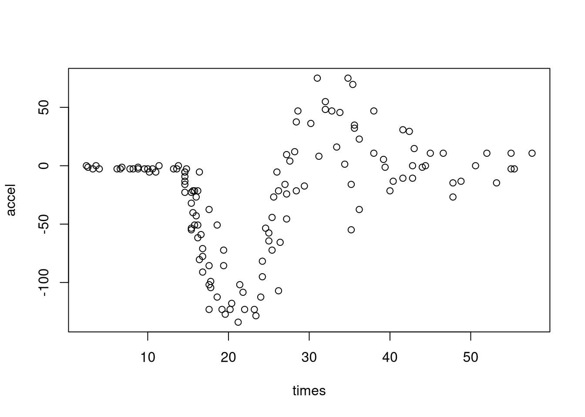
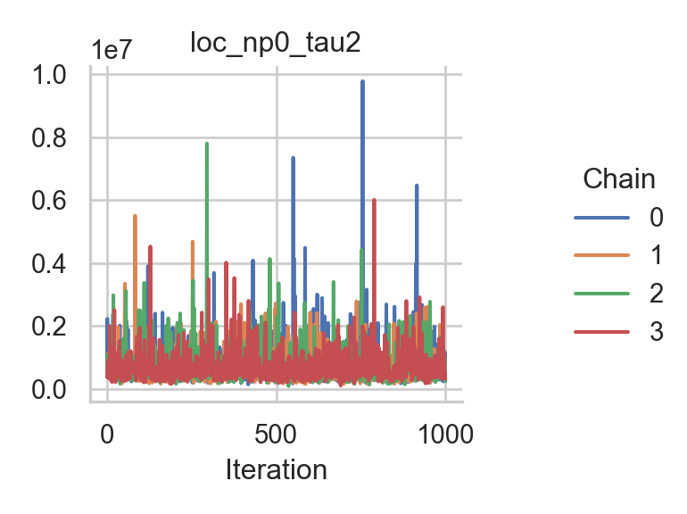
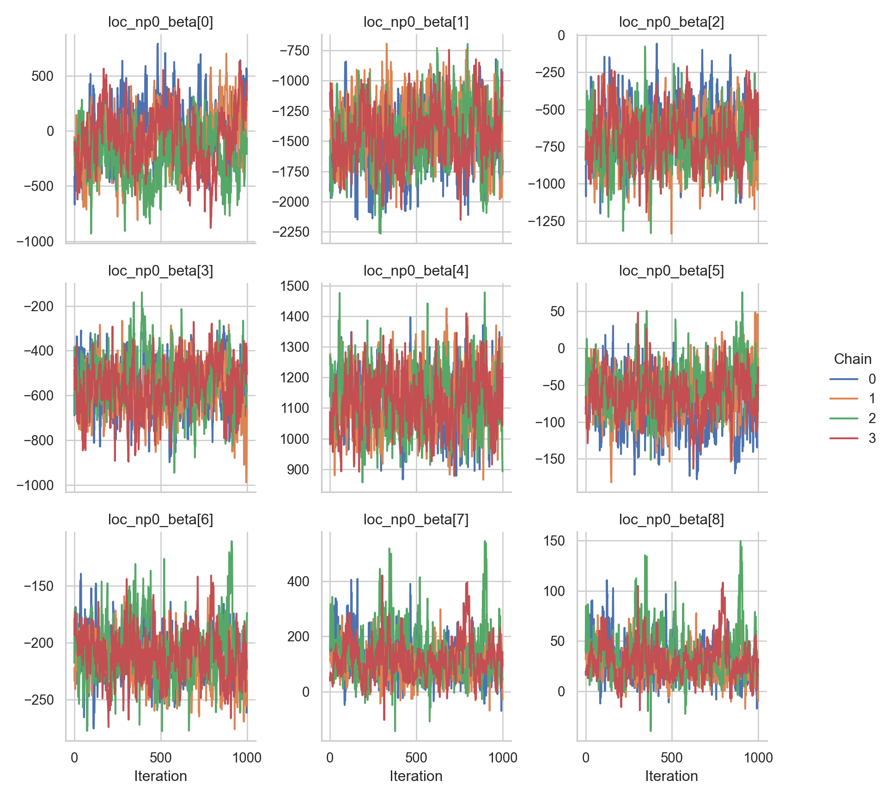
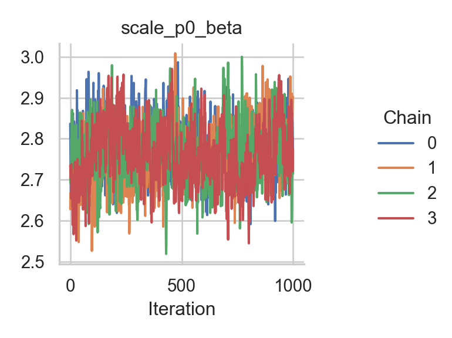
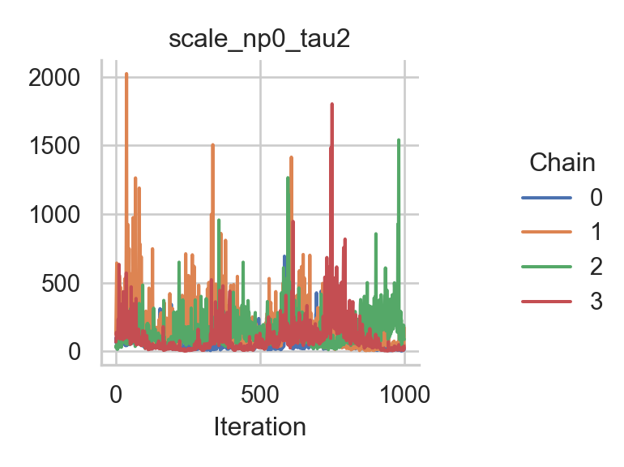
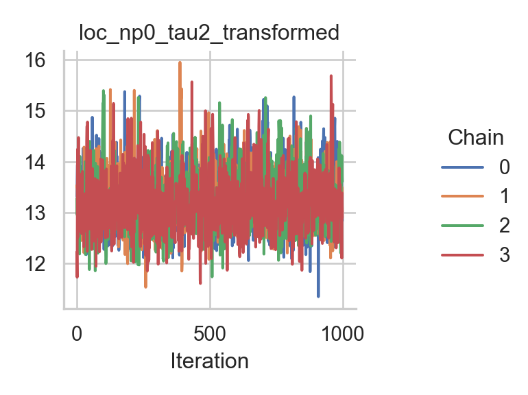
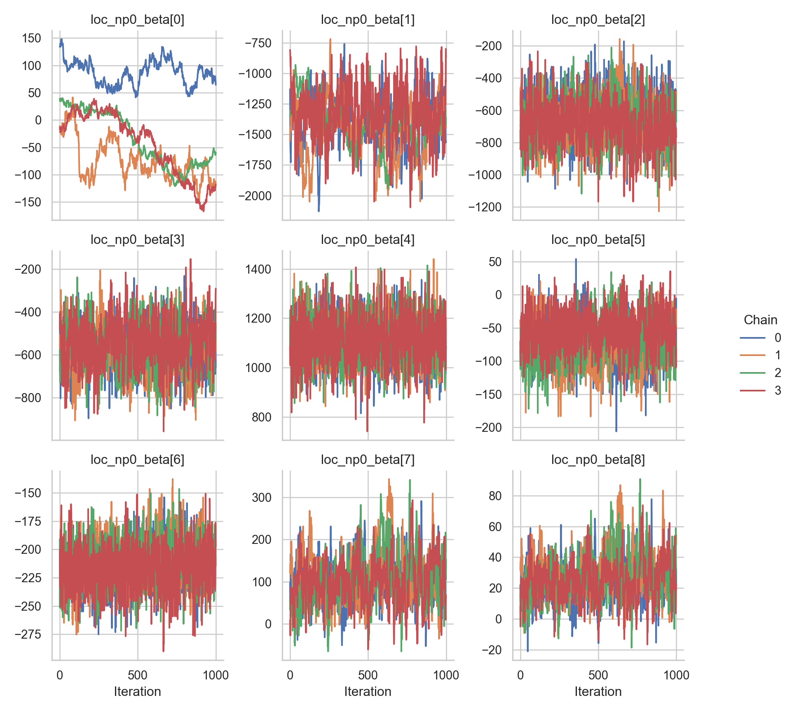
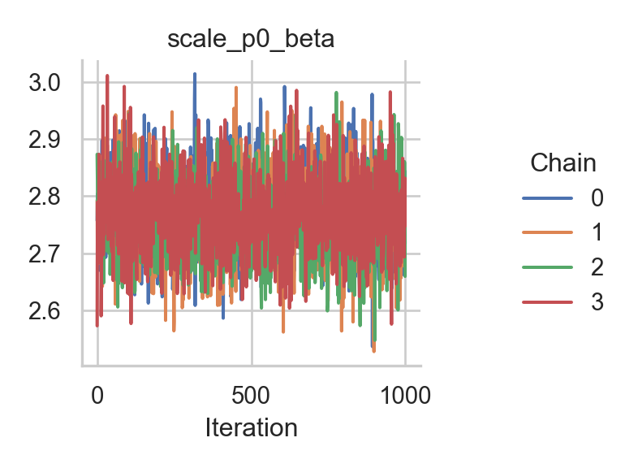

Chapter 5 Comparing samplers
In this tutorial, we are comparing two different sampling schemes on the mcycle dataset with a Gaussian location-scale regression model and two splines for the mean and the standard deviation. The mcycle dataset is a “data frame giving a series of measurements of head acceleration in a simulated motorcycle accident, used to test crash helmets” (from the help page). It contains the following two variables:
times: in milliseconds after impactaccel: in g
We start off in R by loading the dataset and setting up the model with the rliesel::liesel() function.
library(MASS)##
## Attaching package: 'MASS'## The following object is masked from 'package:dplyr':
##
## selectlibrary(rliesel)
use_liesel_venv()## [1] "/home/hannes/.local/share/virtualenvs/liesel-tutorials-1k9wp3mI"data(mcycle)
with(mcycle, plot(times, accel))
model <- liesel(
response = mcycle$accel,
distribution = "Normal",
predictors = list(
loc = predictor(~ s(times)),
scale = predictor(~ s(times), inverse_link = "Exp")
),
data = mcycle
)5.1 Metropolis-in-Gibbs
First, we try a Metropolis-in-Gibbs sampling scheme with IWLS kernels for the regression coefficients (\(\boldsymbol{\beta}\)) and Gibbs kernels for the smoothing parameters (\(\tau^2\)) of the splines.
import liesel.liesel as lsl
model = r.model
builder = lsl.dist_reg_mcmc(model, seed=42, num_chains=4)
builder.set_duration(warmup_duration=5000, posterior_duration=1000)
engine = builder.build()
engine.sample_all_epochs()## INFO - Starting epoch: FAST_ADAPTATION, 75 transitions, 25 jitted together
## WARNING - Errors per chain for kernel_03: 1, 1, 1, 1 / 75 transitions
## INFO - Finished epoch
## INFO - Starting epoch: SLOW_ADAPTATION, 25 transitions, 25 jitted together
## WARNING - Errors per chain for kernel_05: 1, 0, 0, 0 / 25 transitions
## INFO - Finished epoch
## INFO - Starting epoch: SLOW_ADAPTATION, 50 transitions, 25 jitted together
## INFO - Finished epoch
## INFO - Starting epoch: SLOW_ADAPTATION, 100 transitions, 25 jitted together
## WARNING - Errors per chain for kernel_05: 0, 1, 0, 0 / 100 transitions
## INFO - Finished epoch
## INFO - Starting epoch: SLOW_ADAPTATION, 200 transitions, 25 jitted together
## WARNING - Errors per chain for kernel_05: 1, 0, 1, 0 / 200 transitions
## INFO - Finished epoch
## INFO - Starting epoch: SLOW_ADAPTATION, 400 transitions, 25 jitted together
## WARNING - Errors per chain for kernel_05: 1, 1, 1, 1 / 400 transitions
## INFO - Finished epoch
## INFO - Starting epoch: SLOW_ADAPTATION, 800 transitions, 25 jitted together
## WARNING - Errors per chain for kernel_05: 1, 1, 1, 0 / 800 transitions
## INFO - Finished epoch
## INFO - Starting epoch: SLOW_ADAPTATION, 3300 transitions, 25 jitted together
## WARNING - Errors per chain for kernel_02: 0, 0, 1, 0 / 3300 transitions
## WARNING - Errors per chain for kernel_05: 1, 0, 1, 1 / 3300 transitions
## INFO - Finished epoch
## INFO - Starting epoch: FAST_ADAPTATION, 50 transitions, 25 jitted together
## WARNING - Errors per chain for kernel_05: 1, 0, 1, 1 / 50 transitions
## INFO - Finished epoch
## INFO - Finished warmup
## INFO - Starting epoch: POSTERIOR, 1000 transitions, 25 jitted together
## INFO - Finished epochClearly, the performance of the sampler could be better, especially for the intercept of the mean. The corresponding chain exhibits a very strong autocorrelation.
import liesel.goose as gs
results = engine.get_results()
summary = gs.summary(results)
fig = gs.plot_trace(results, "loc_p0_beta")fig = gs.plot_trace(results, "loc_np0_tau2")
fig = gs.plot_trace(results, "loc_np0_beta")
fig = gs.plot_trace(results, "scale_p0_beta")
fig = gs.plot_trace(results, "scale_np0_tau2")
fig = gs.plot_trace(results, "scale_np0_beta")To confirm that the chains have converged to reasonable values, here is a plot of the estimated mean function:
library(dplyr)
library(ggplot2)
library(reticulate)
summary <- py$summary
beta <- summary %>%
filter(index == "loc_np0_beta") %>%
group_by(param_index) %>%
summarize(mean = mean(mean)) %>%
ungroup()
beta <- beta$mean
X <- py_to_r(model$nodes$loc_np0_X$value)
f <- X %*% beta
beta0 <- summary %>%
filter(index == "loc_p0_beta") %>%
group_by(param_index) %>%
summarize(mean = mean(mean)) %>%
ungroup()
beta0 <- beta0$mean
ggplot(data.frame(times = mcycle$times, mean = beta0 + f)) +
geom_line(aes(times, mean), color = palette()[2], size = 1) +
geom_point(aes(times, accel), data = mcycle) +
ggtitle("Estimated mean function") +
theme_minimal()5.2 NUTS sampler
As an alternative, we try a NUTS kernel which samples all model parameters (regression coefficients and smoothing parameters) in one block. To do so, we first need to log-transform the smoothing parameters. This is the model graph before the transformation:
lsl.plot_model(model)Before transforming the smoothing parameters with the lsl.transform_parameter() function, we first need to copy all model nodes. Once this is done, we need to update the output nodes of the smoothing parameters and rebuild the model. There are two additional nodes in the new model graph.
model = model.transform_parameter("loc_np0_tau2", "Log")
model = model.transform_parameter("scale_np0_tau2", "Log")
lsl.plot_model(model)Now we can set up the NUTS sampler, which is straightforward because we are using only one kernel.
parameters = model.get_nodes_by_class(lsl.Parameter)
builder = gs.EngineBuilder(seed=42, num_chains=4)
builder.set_model(lsl.GooseModel(model))
builder.add_kernel(gs.NUTSKernel(parameters.keys()))
builder.set_initial_values(model.state)
builder.set_duration(warmup_duration=5000, posterior_duration=1000)
engine = builder.build()
engine.sample_all_epochs()## INFO - Starting epoch: FAST_ADAPTATION, 75 transitions, 25 jitted together
## WARNING - Errors per chain for kernel_00: 35, 24, 30, 37 / 75 transitions
## INFO - Finished epoch
## INFO - Starting epoch: SLOW_ADAPTATION, 25 transitions, 25 jitted together
## WARNING - Errors per chain for kernel_00: 5, 2, 4, 4 / 25 transitions
## INFO - Finished epoch
## INFO - Starting epoch: SLOW_ADAPTATION, 50 transitions, 25 jitted together
## WARNING - Errors per chain for kernel_00: 2, 1, 3, 2 / 50 transitions
## INFO - Finished epoch
## INFO - Starting epoch: SLOW_ADAPTATION, 100 transitions, 25 jitted together
## WARNING - Errors per chain for kernel_00: 12, 4, 6, 10 / 100 transitions
## INFO - Finished epoch
## INFO - Starting epoch: SLOW_ADAPTATION, 200 transitions, 25 jitted together
## WARNING - Errors per chain for kernel_00: 14, 11, 10, 20 / 200 transitions
## INFO - Finished epoch
## INFO - Starting epoch: SLOW_ADAPTATION, 400 transitions, 25 jitted together
## WARNING - Errors per chain for kernel_00: 9, 22, 19, 12 / 400 transitions
## INFO - Finished epoch
## INFO - Starting epoch: SLOW_ADAPTATION, 800 transitions, 25 jitted together
## WARNING - Errors per chain for kernel_00: 38, 53, 36, 31 / 800 transitions
## INFO - Finished epoch
## INFO - Starting epoch: SLOW_ADAPTATION, 3300 transitions, 25 jitted together
## WARNING - Errors per chain for kernel_00: 159, 96, 123, 121 / 3300 transitions
## INFO - Finished epoch
## INFO - Starting epoch: FAST_ADAPTATION, 50 transitions, 25 jitted together
## WARNING - Errors per chain for kernel_00: 3, 6, 5, 5 / 50 transitions
## INFO - Finished epoch
## INFO - Finished warmup
## INFO - Starting epoch: POSTERIOR, 1000 transitions, 25 jitted together
## INFO - Finished epochThe results are mixed. On the one hand, the NUTS sampler performs much better on the intercepts (for both the mean and the standard deviation), but on the other hand, the Metropolis-in-Gibbs sampler with the IWLS kernels seems to work better for the spline coefficients.
results = engine.get_results()
summary = gs.summary(results)
fig = gs.plot_trace(results, "loc_p0_beta")fig = gs.plot_trace(results, "loc_np0_tau2_transformed")
fig = gs.plot_trace(results, "loc_np0_beta")
fig = gs.plot_trace(results, "scale_p0_beta")
fig = gs.plot_trace(results, "scale_np0_tau2_transformed")fig = gs.plot_trace(results, "scale_np0_beta")Again, here is a plot of the estimated mean function:
library(dplyr)
library(ggplot2)
library(reticulate)
summary <- py$summary
beta <- summary %>%
filter(index == "loc_np0_beta") %>%
group_by(param_index) %>%
summarize(mean = mean(mean)) %>%
ungroup()
beta <- beta$mean
X <- py_to_r(model$nodes$loc_np0_X$value)
f <- X %*% beta
beta0 <- summary %>%
filter(index == "loc_p0_beta") %>%
group_by(param_index) %>%
summarize(mean = mean(mean)) %>%
ungroup()
beta0 <- beta0$mean
ggplot(data.frame(times = mcycle$times, mean = beta0 + f)) +
geom_line(aes(times, mean), color = palette()[2], size = 1) +
geom_point(aes(times, accel), data = mcycle) +
ggtitle("Estimated mean function") +
theme_minimal()